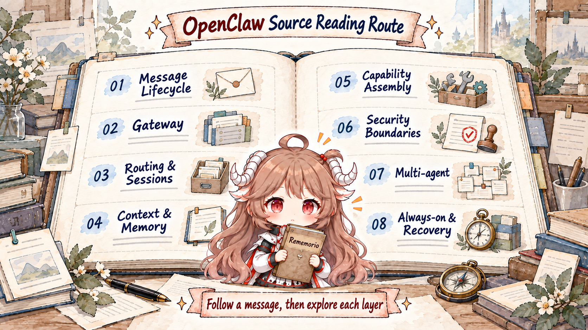

How one message completes an agent turn
Follow a message from ChannelPlugin through sessionKey, queues, the embedded agent, tool events, and ReplyPayload.
Read the article →Source reading · eight-part route
The hard part is not one model call. It is how message ingress, session ownership, tool execution, policy, and durable state constrain a run together. The map shows the full route; the published journey starts with the end-to-end turn.

Follow a message from ChannelPlugin through sessionKey, queues, the embedded agent, tool events, and ReplyPayload.
Read the article →Read the first connect frame, hello-ok, role and scope policy, event fanout, gap refresh, and slow-consumer boundary.
Read the article →Separate bindings, dmScope, identityLinks, sessionKey/sessionId, and the four temporal semantics: steer, followup, collect, interrupt.
Read the article →